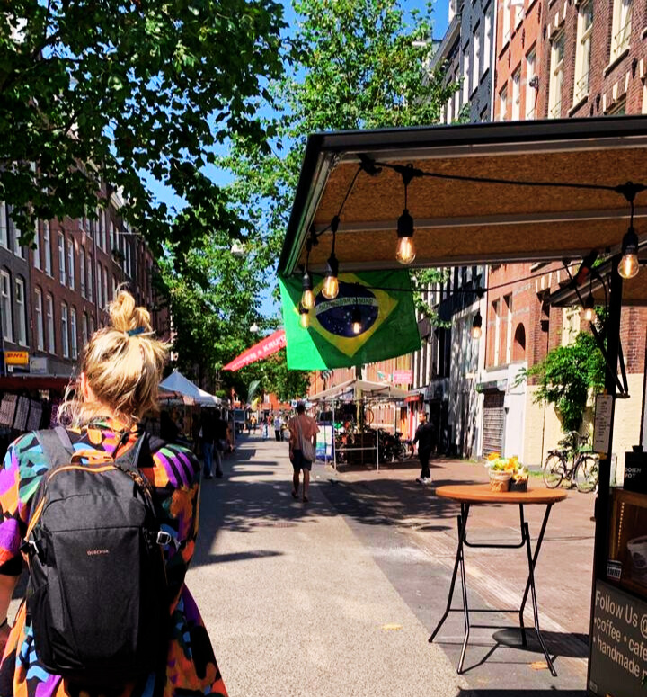

Olá, eu sou Kate, desenvolvedora Front-End em formação. Esses são meus projetos.
Atualmente, estou cursando Ciência da Computação na Universidade Anhembi Morumbi, em São Paulo.
Em 2022, finalizei minha graduação em Direito e, durante um estágio, acabei caindo no setor de tecnologia. Desde então, estou em transição de carreira. A programação parecia um desafio assustador no começo, mas, depois dos primeiros cursos, percebi que era um caminho que eu podia dominar.
Meu primeiro contato com código foi na pesquisa jurídica, usando a linguagem R para análise de dados. Essa experiência marcou uma virada e despertou meu interesse por programação.
Fora dos estudos, gosto de ler, desenhar e jogar videogame!

Tenho experiência acadêmica com R (Análise de Dados), Java, Python, SQL (PostgreSQL, MariaDB, MySQL), JavaScript, TypeScript, React.js, CSS, HTML, CI/CD, FastAPI, Flask, C e Git.
Estou aberta a novas oportunidades e a participar de discussões sobre tecnologia.
Última experiência
Em 2025, atuei na Skadyr como Desenvolvedora Full Stack I (remoto), entre abril e outubro. Contribuí no desenvolvimento de sistemas web e APIs combinando ferramentas low-code e código tradicional — com foco em React/TypeScript, FastAPI e Node.js.
- Organização de backlog e acompanhamento de entregas com rastreabilidade diretamente com cliente.
- Participação em ritos de sprint (estimativas, definição de escopo, reviews e retros).
- Integrações com serviços externos: automações, pagamentos, bancos de dados e APIs de terceiros.
Entre em contato
linkedin.com/in/katerinewitkoskiVeja mais sobre minhas experiências.